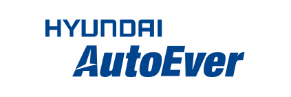
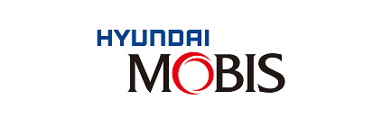
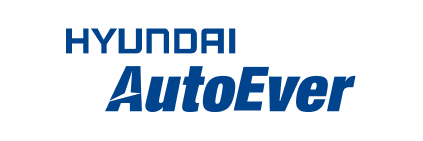
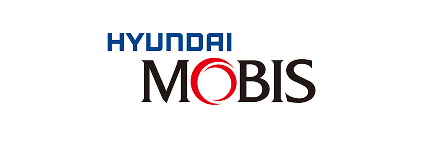

누구나 회원 가입 등 별도의 절차 없이 '자동차 테크맵 프로젝트'의 라이선스 정책에 따라 오픈소스 정보 및 콘텐츠를 자유롭게 활용할 수 있습니다.
'자동차 테크맵 프로젝트'에 참여하려면 멤버로 가입해야 하며, 가입 신청서(개인/기업) 제출 후 운영위원회의 승인을 통해 등록됩니다.
프로젝트에 지속적인 기여를 한 기업 회원은 운영위원회의 승인을 거쳐 보드 회원사로 임명될 수 있습니다.
프로젝트 운영, 관련 서비스 개발 및 확산 등을 지원한 기업 또는 기관은 후원사로 인정됩니다.
운영위원회는 보드 회원사로 구성되며, 1년 단위로 활동 실적에 따라 재구성 됩니다.
프로젝트의 정책 수립, 일정 관리 등 주요 의사 결정을 수행합니다.
회원, 보드 회원사, 후원사에 대한 가입 및 등록 신청을 심사하고 승인합니다.
거버넌스 정책 및 관련 문서를 작성하고 개정합니다.
운영사무국은 정보통신산업진흥원이 구성한 조직(오픈업)이 담당합니다.
자동차 테크맵 프로젝트의 원활한 운영을 실무적으로 지원합니다.
 


